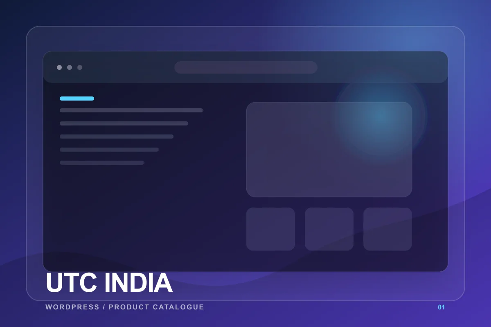

What is verified.
Umair's resume lists UTC India under web development projects and states that it was built using WordPress. The public website presents insulated ware and kitchen product categories including hot pots, premium hotpots, stainless steel, family sets, picnic sets, and a microwave series.
No design ownership, project dates, team size, plugin list, revenue impact, or performance metric is documented for this specific project, so none is claimed.
A browseable product presence.
The original client problem is not preserved in the resume. The delivered site's visible objective is clear: introduce the company, organize a broad product catalogue, and provide direct contact information for prospective buyers.
What can — and cannot — be reconstructed.
No original research notes, wireframes, or planning documents are available. The live information architecture shows practical grouping around product categories, an about route, and contact access. That is an observation of the output, not a claim about the original process.
WordPress delivery.
The resume confirms WordPress as the build technology. WordPress is a sensible fit for an image-led catalogue where a business may need to manage product content over time. Theme, editor, and plugin details are not documented.
- Verified technology: WordPress.
- Visible output: category-led product browsing.
- Visible routes: homepage, product categories, about, and contact.
Documented limits matter.
Project-specific challenges and solutions are not recorded in the resume. Instead of turning ordinary WordPress patterns into a fictional story, this case study keeps the technical boundary explicit and lets the live work carry the proof.
No borrowed claims.
Umair's broader role documents website speed optimization, PageSpeed use, and SEO best practices. The resume does not attach those responsibilities directly to UTC India, so this case study does not attribute a score, audit, test plan, or deployment process to this project.
A public, usable catalogue.
The resume-linked website remains publicly accessible at the listed domain. That is the only result claimed here; traffic, lead, conversion, and business metrics were not provided.
Visit live website